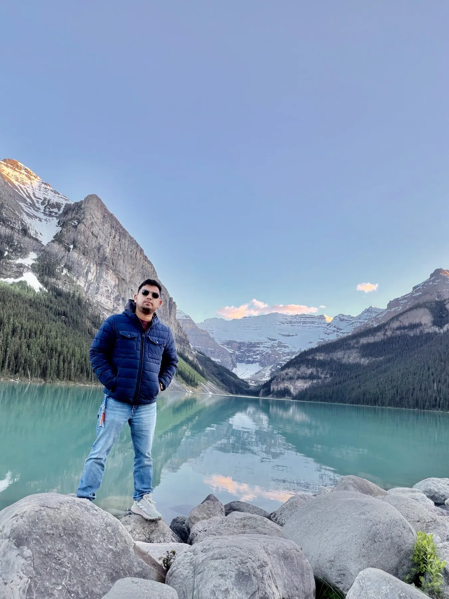
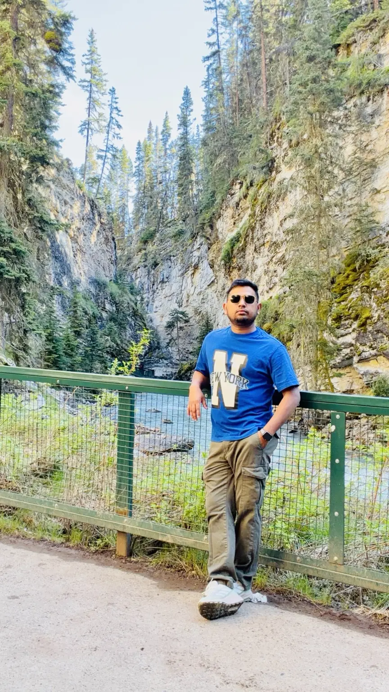
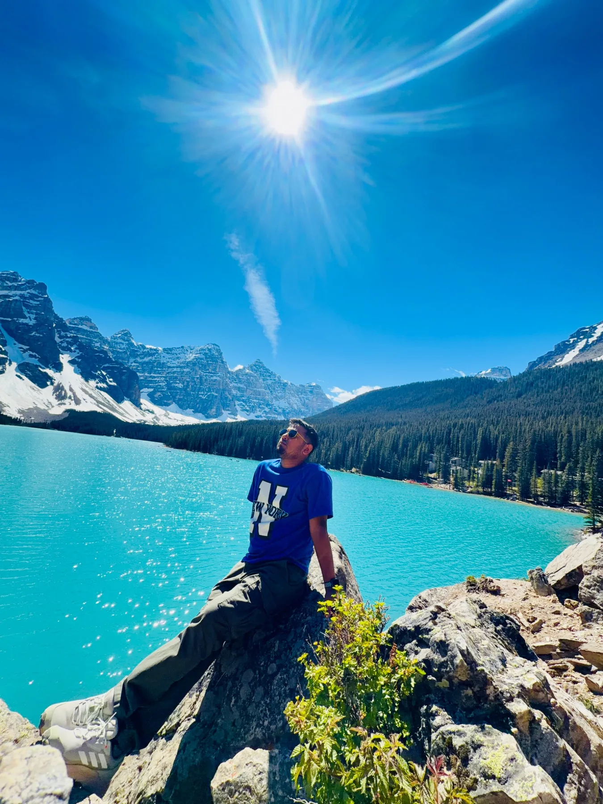
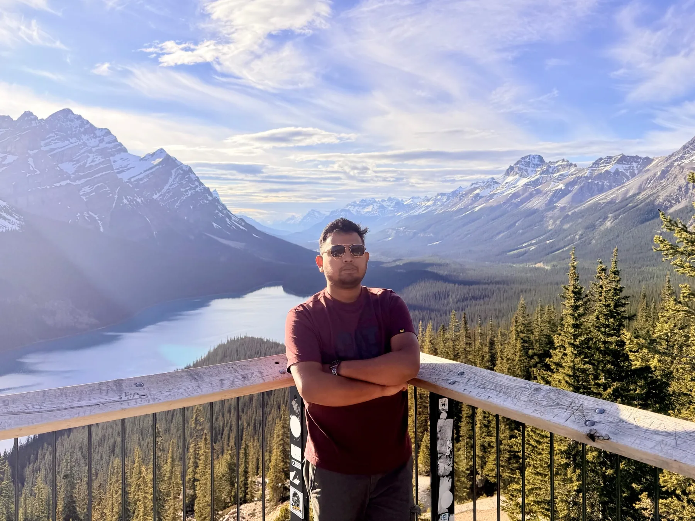
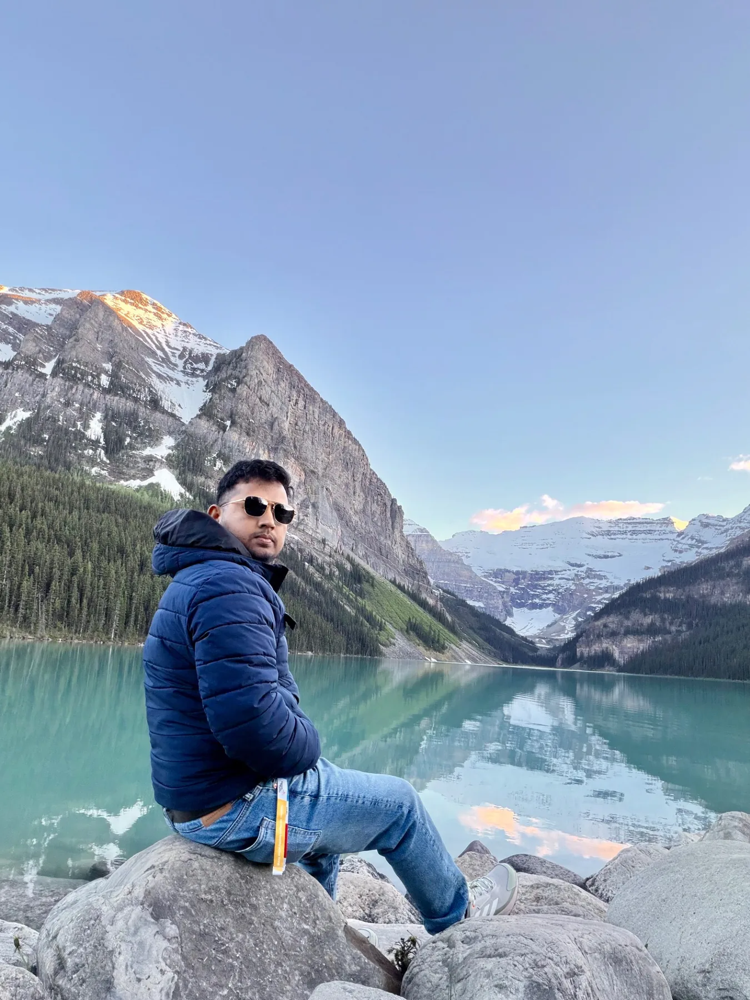
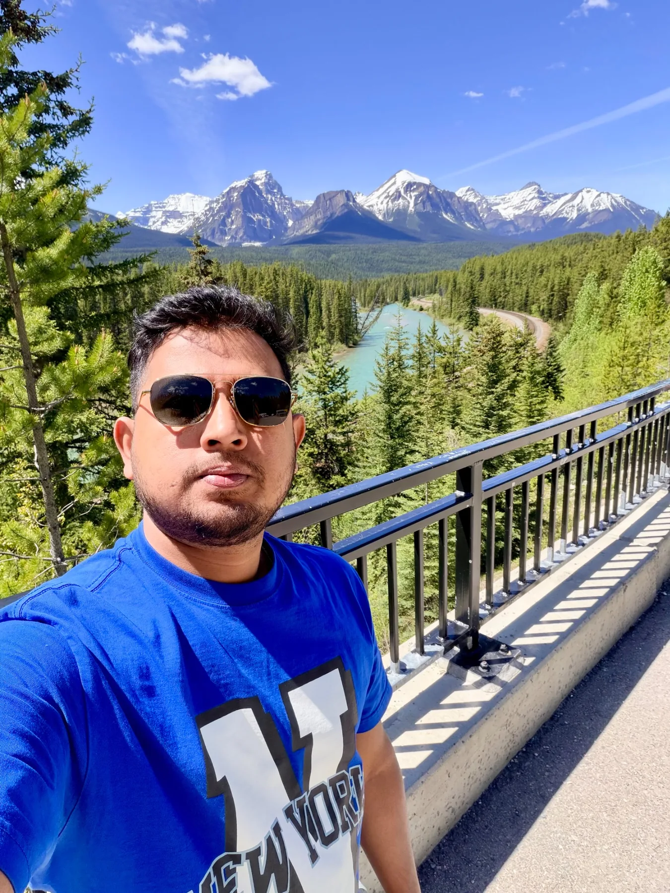
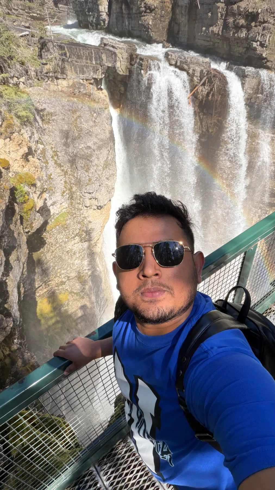
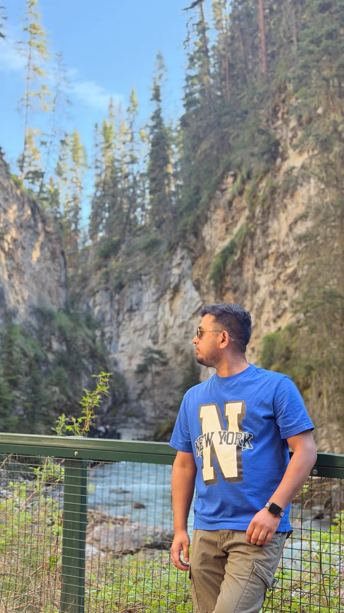
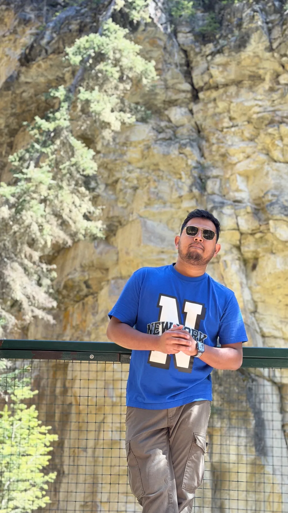
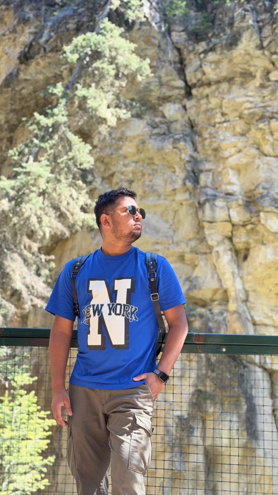

Banff, Lake Louise & Moraine Lake
Mountain views, turquoise water, scenic highways, shuttles, parking, and trip-planning lessons.
BanffLake LouiseMoraine LakePeyto Lake
Travel with me
From the Atlantic coast to the Rocky Mountains, this is where I collect the places I’ve explored and the practical details I learned along the way.
Featured destinations

Mountain views, turquoise water, scenic highways, shuttles, parking, and trip-planning lessons.

Atlantic views, local attractions, downtown walks, historic sites, lakes, trails, and weekend adventures.
Architecture, food, history, and two cities with very different personalities.
Big-city energy, iconic attractions, parks, and one of Canada’s most famous landmarks.
Rockies gallery
Lake Louise, Moraine Lake, Peyto Lake, canyon walks, waterfalls, and the roads connecting it all.












Photos: Rasel in Canada.